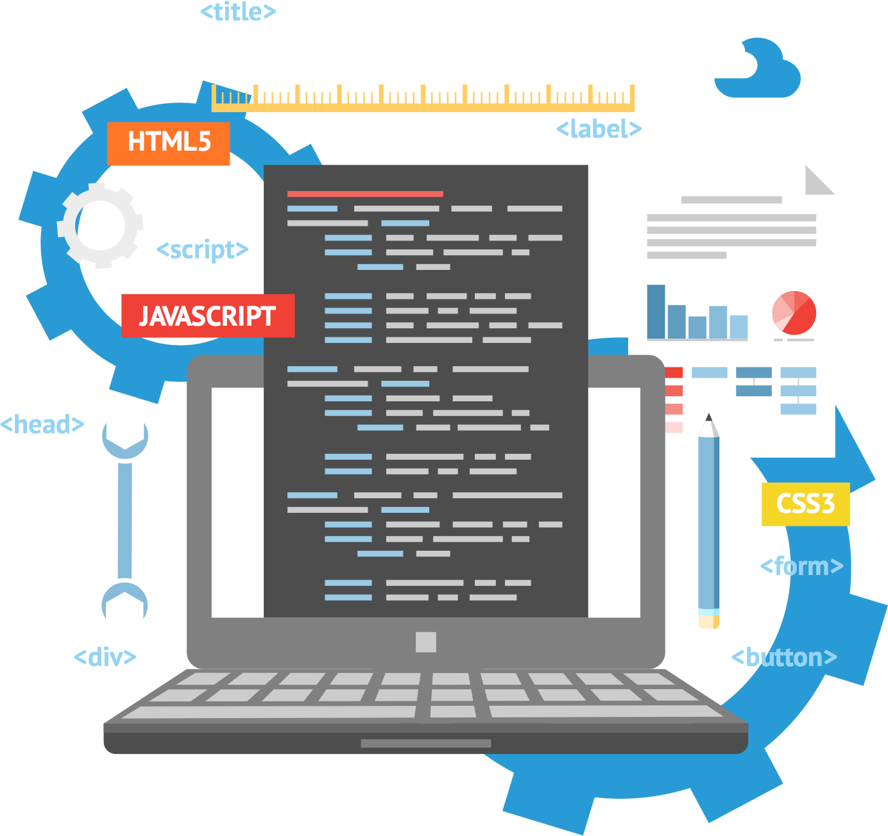

En esencia, el desarrollo web se refiere a la creación y mantenimiento de sitios y aplicaciones web.
Esto implica una combinación de diseño web, programación, administración de bases de datos, seguridad, optimización de rendimiento y accesibilidad.
Un desarrollador web es el arquitecto detrás de lo que vemos y experimentamos en la web.
Su trabajo es garantizar que los sitios web sean funcionales, atractivos y eficientes.

la importancia del desarrollo web
La importancia del desarrollo web en la actualidad es innegable, ya que juega un papel fundamental en la forma en que interactuamos,
trabajamos y consumimos información en el mundo digital. Aquí tienes algunas razones clave que destacan su relevancia:
- Presencia en línea: El desarrollo web es la puerta de entrada a la presencia en línea. Para individuos, empresas y organizaciones de todos los tamaños, tener un sitio web es esencial para ser encontrados y reconocidos en el espacio digital. Es la tarjeta de presentación virtual que permite llegar a una audiencia global las 24 horas del día.
- Comunicación y Marketing: Los sitios web son herramientas poderosas para la comunicación y el marketing. Proporcionan un canal directo para interactuar con clientes, compartir información sobre productos y servicios, promocionar eventos y aumentar la visibilidad de la marca.
- Accesibilidad: A través del desarrollo web, se puede garantizar que la información y los servicios estén disponibles para una amplia variedad de usuarios, incluidos aquellos con discapacidades. El diseño web accesible asegura que todos tengan igualdad de acceso a la información en línea.
- E-commerce y Ventas en Línea: Para muchas empresas, el comercio electrónico se ha convertido en una parte fundamental de sus operaciones. El desarrollo web permite la creación y gestión de tiendas en línea, lo que facilita la compra y venta de productos y servicios en todo el mundo.
- Interactividad y Experiencia del Usuario: Con el desarrollo web, es posible crear sitios web interactivos que brinden una experiencia de usuario rica y atractiva. Las aplicaciones web, por ejemplo, permiten a los usuarios realizar acciones específicas directamente desde el navegador.
- Optimización de Procesos: Las aplicaciones web personalizadas pueden mejorar la eficiencia y la productividad en empresas y organizaciones al automatizar procesos, gestionar datos y ofrecer herramientas específicas para tareas comerciales.
- Globalización: El desarrollo web rompe las barreras geográficas, permitiendo que empresas y organizaciones alcancen mercados internacionales sin la necesidad de una presencia física en cada ubicación. Esto abre nuevas oportunidades de crecimiento y expansión.
- Análisis y Toma de Decisiones: Las herramientas de análisis web permiten recopilar datos sobre el comportamiento de los usuarios en línea. Esto facilita la toma de decisiones informadas sobre estrategias de marketing, diseño de sitios web y mejoras en la experiencia del usuario.
- Actualización y Mantenimiento: Los sitios web pueden mantenerse actualizados de manera relativamente sencilla. Esto es esencial para proporcionar información precisa y relevante, así como para abordar problemas de seguridad y mantener la compatibilidad con los navegadores.
- Innovación Tecnológica:Innovación Tecnológica: El desarrollo web está en constante evolución. Las nuevas tecnologías, como las aplicaciones web progresivas (PWAs) y el desarrollo basado en la nube, están abriendo nuevas posibilidades y mejorando la eficiencia en el desarrollo y la entrega de aplicaciones web.